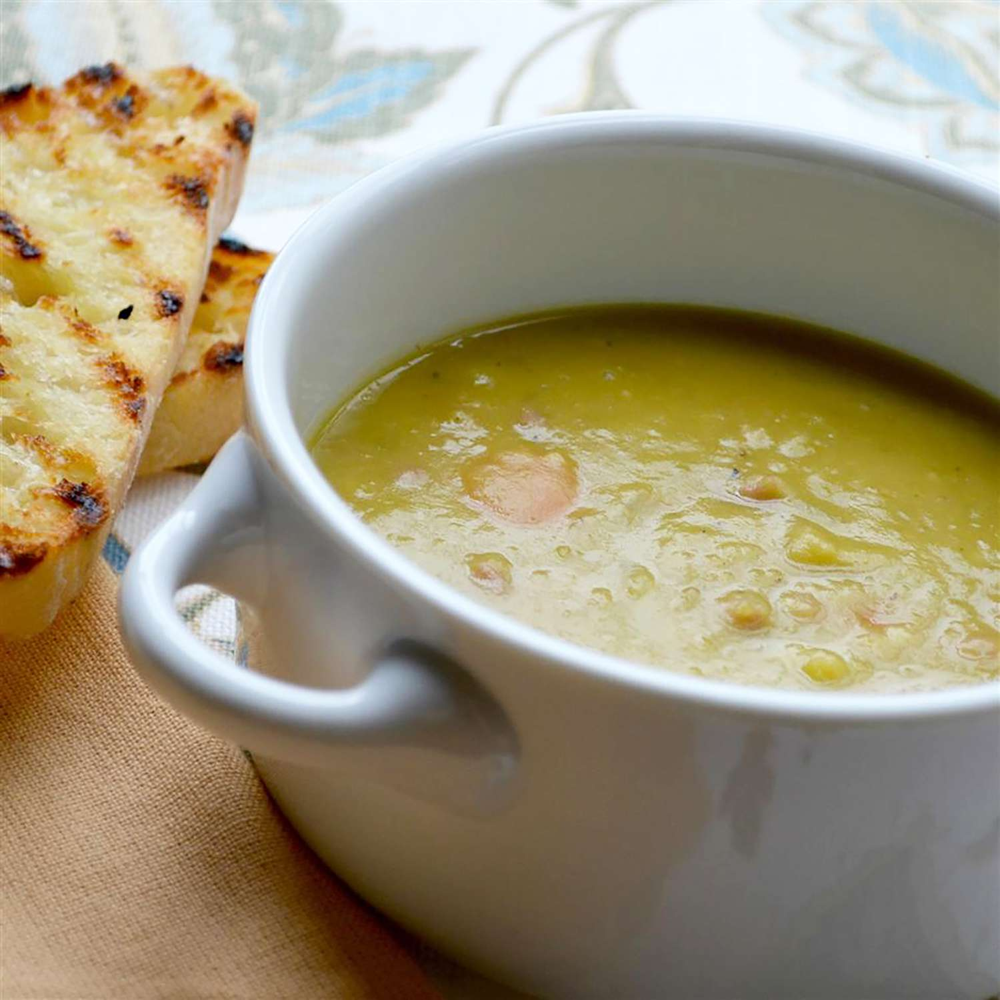

Soup

Split Pea Soup
Description
This cozy split pea soup with ham is hearty, flavorful, and oh-so comforting.
Ingredients
- 1 pound ham, diced
- ½ teaspoon salt
- 1 pound dried split peas, rinsed
- 2 ½ cups water
- 1 quart chicken stock
- 2 tablespoons butter
Steps
- Melt butter in a large soup pot over medium-low heat. Stir in celery, onion, and sliced garlic; cook and stir until onions are translucent but not brown, 5 to 8 minutes.
- Stir in split peas, ham, and bay leaf. Pour in chicken stock and water; stir to combine and simmer until peas are tender and soup has thickened, about 1 hour and 15 minutes. Stir occasionally. Season with salt and black pepper to serve.